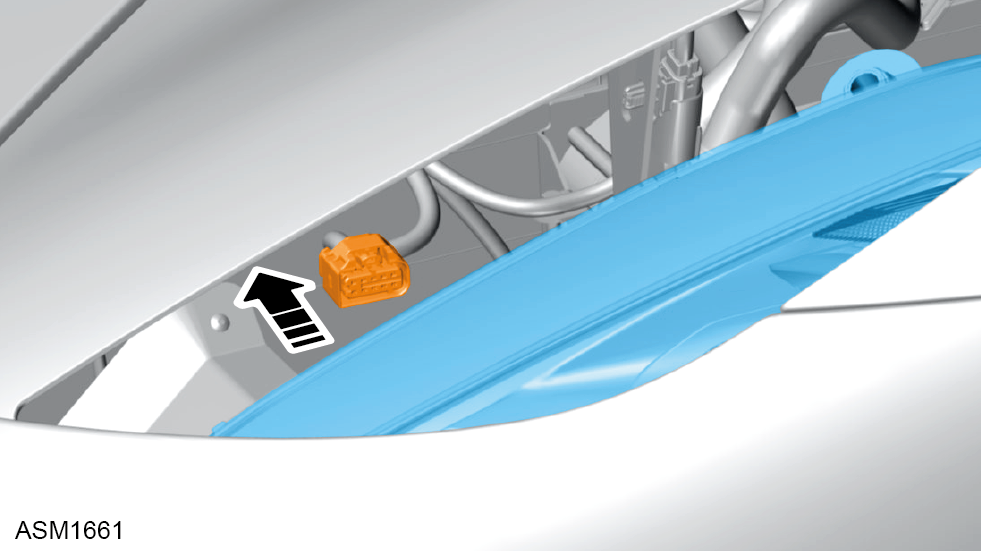
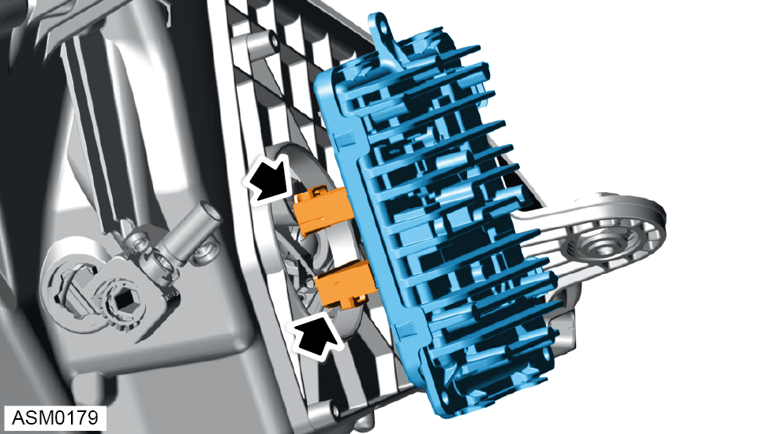

Headlamp Assembly - Left Side
Print
Operation Code: 17.13.01-02
Removal
- Remove wheelarch liner - front - left side. Refer to procedure.
- Remove M6x16 bolts with washers (x2) and M6 nuts with washers (x2) securing radiator support bracket. Torque 10 Nm.
- Move bracket aside to gain access to headlamp.
- Remove M4x16 bolt securing headlamp adjuster cable to fender bracket. Torque 2.25 Nm.
- Remove M6x35 bolt securing front of headlamp to fender. Torque 10 Nm.
NOTE: Access front headlamp fixing through opening between headlamp and fender.
- Remove M6 nut securing rear of headlamp to fender. Torque 8 Nm.
- Remove M6x35 bolts (x2) securing rear of headlamp to fender. Torque 10 Nm.
- Remove headlamp from vehicle through wheelarch area.

- Disconnect electrical connector connecting headlamp to main harness.
NOTE: Access electrical connector through opening between headlamp aperture.
Do not carry out further disassembly if component is removed for access only.
- Remove screws (x3) securing control module to headlamp.
- Remove control module from headlamp to gain access to electrical connectors.

- Disconnect electrical connectors (x4) connecting headlamp harness to control module.
- Remove control module from headlamp.
Installation
- Installation is the reverse of removal procedure except for the following:
- Check and adjust headlamp alignment.